ThingsBook QA
구축하는 방법.
1. 실기기 세팅
시뮬레이터가 아닌 실제 iPhone 실기기에서, 공식 XCUITest 드라이버와 WDA 상주 에이전트를 구축하고 Appium Inspector 세션을 연동하기까지의 7단계 표준 프로세스
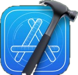
Xcode 설치 & Apple 공식 개발자 도구 세팅
실제 iPhone 실기기와 Mac 사이의 USB 유선 터널링 및 XCUITest 테스트 번들 빌드를 위한 필수 베이스캠프
macOS에서 실제 iPhone 실기기를 인식하고 제어하기 위한 Apple 공식 XCUITest 테스트 프레임워크와 Command Line Tools를 제공하는 유일한 필수 도구이기 때문입니다.
$ xcode-select --install
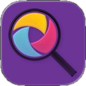
Appium 2 & Appium Inspector 설치
W3C 표준 프로토콜로 실기기 명령을 중계하는 서버와, 화면의 XML 뼈대 및 요소를 실시간으로 추출하는 인스펙터
테스트 스크립트와 모바일 실기기 사이에서 명령을 중지·번역하는 표준 크로스 플랫폼 자동화 서버(Port 4723) 역할을 하기 때문입니다.
실기기 화면의 모든 UI 요소(버튼, 텍스트, 뷰)의 XML 접근성 계층 트리(Hierarchy)와 고유 식별자(Accessibility ID)를 눈으로 보고 따오기 위한 필수 GUI 도구이기 때문입니다.
Xcode WDA 프로젝트 서명 및 Cmd+U 빌드 테스트
Mac Xcode에서 무료 개발자 계정(Zero-Cost Dev ID)으로 WebDriverAgent 프로젝트를 열고, 타깃 서명 및 Cmd+U 테스트 구동을 통해 포트 8100 상주 HTTP 서버를 빌드합니다.
Apple 공식 XCUITest 위에서 동작하며, 기기 내부에서 포트 8100 HTTP 통신으로 터치·스와이프·키 입력을 직접 대행하는 핵심 상주 에이전트입니다.
com.facebook.wda.runner.nam 형태로 접미사를 추가합니다.
iPhone 12 (NST-099) 실기기로 명확히 선택합니다.
Product > Test (Cmd+U)로 기기에 테스트 러너를 전송·구동합니다.
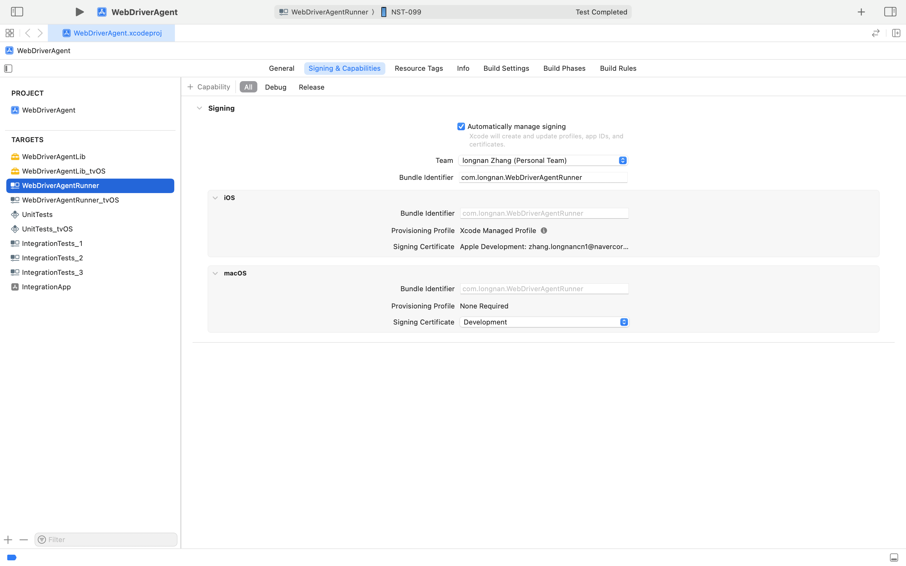
iPhone 12 (NST-099) 실기기 선택 후 Cmd+U Test 빌드 진행
실기기(iPhone 12) WDA 권한 동의 및 상주 설치 확인
실제 iPhone 12에서 Apple 보안 정책에 따른 개발자 앱 인증서를 신뢰(Trust) 승인하고, 홈 화면에 WebDriverAgentRunner 에이전트가 정상 상주 설치되었는지 확인합니다.
Apple의 엄격한 보안 샌드박스로 인해, 외부에서 빌드된 앱은 설정에서 사용자가 명시적으로 인증서를 신뢰(Trust)해야만 백그라운드 터치 제어 권한이 부여됩니다.
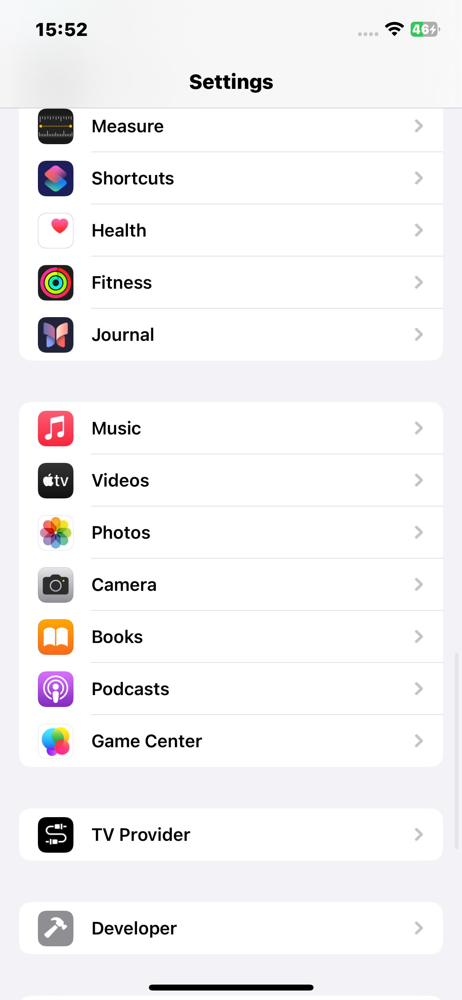
Appium Inspector 세팅 & 실기기 세션 수립
Desired Capabilities(기기 UDID, 포트 4723, 대상 앱 Bundle ID)를 주입하여 실기기 iPhone 12와 실시간 XCUITest 세션을 수립합니다.
Appium Inspector가 실기기 및 로컬 Appium 서버(Port 4723)와 통신하기 위해 주입하는 JSON 기반 환경 설정 규격입니다.
appium:automationName = "XCUITest"
appium:udid = "00008101-00122941217A001E"
appium:bundleId = "com.navercorp.article.ios"
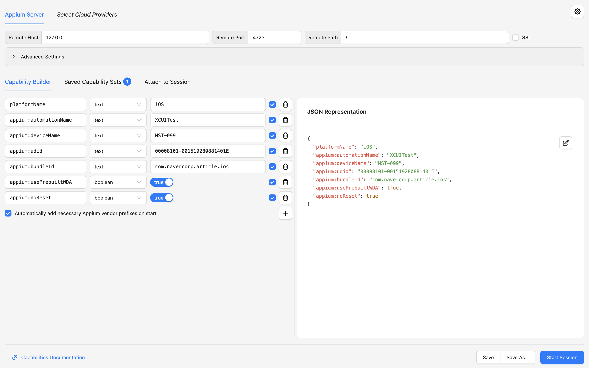
maestro-runner 설치 & Real Device 자동화 CLI 환경 구축
유료 종속이 없는 오픈소스 초고속 모바일 UI 테스트 러너(devicelab-dev/maestro-runner)를 설치하여 실제 iPhone 12에서 YAML 시나리오를 고속 배치 제어할 수 있는 CLI 환경을 완성합니다.
상용 Maestro의 유료 라이선스 제약(클라우드 종속/과금) 없이, Go 언어로 작성된 100% 무료 오픈소스 경량 바이너리로 로컬 실기기 및 WDA와 1:1 직결되어 YAML 테스트를 지연 없이 초고속 배치 구동합니다.
$ curl -fsSL "https://get.maestro.mobile.dev" | bash
$ maestro-runner --version # v1.1.29+ 정상 출력
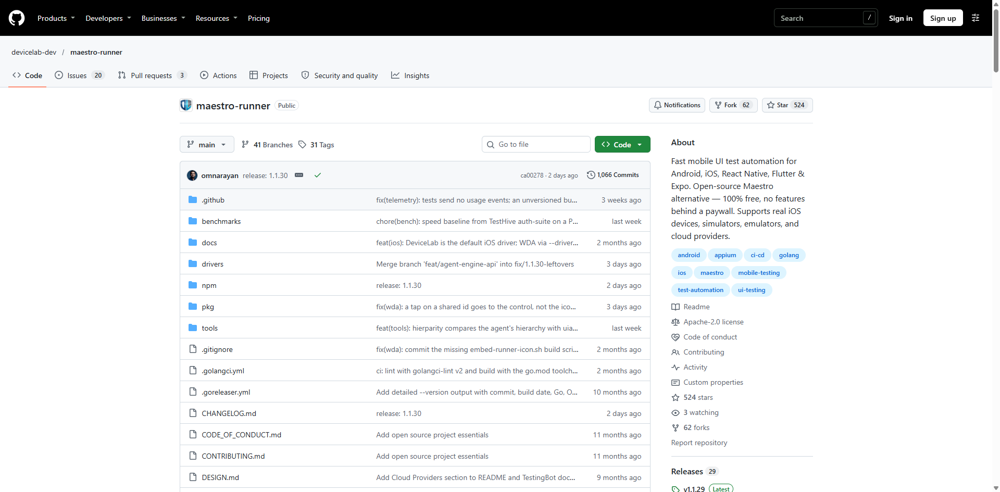
Maven Project 생성 & STAC 라이브러리 연동
Selenium과 Appium 기반으로 테스트 시작부터 DashBoard까지 전주기 지원하는 통합 자동화 라이브러리
STAC은 Selenium과 Appium을 기반으로 더욱 간단하고 강력한 이용을 도와주는 자동화 라이브러리입니다.
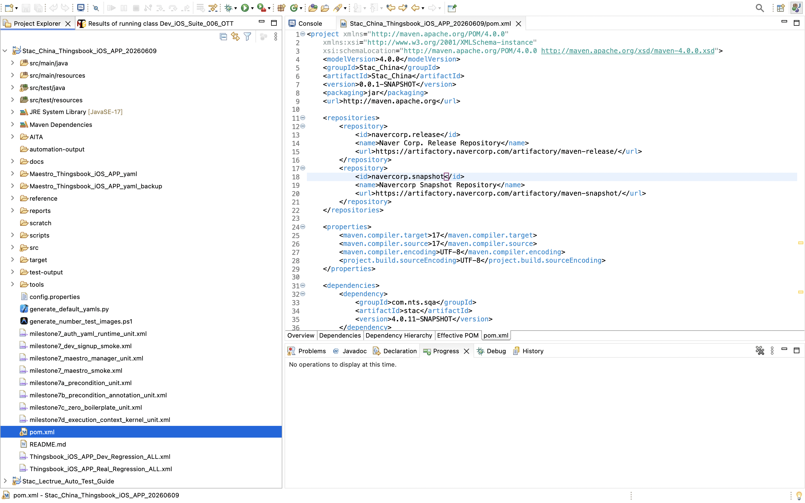
2. 요소 탐색 사람의 눈처럼 정확하게 찾아내는 접근성 트리
화면을 픽셀(이미지)로 찾는 것이 아니라, Apple 접근성(Accessibility) 뼈대를 탐색하여 화면 해상도나 기종이 바뀌어도 0% 오작동을 보장합니다.
Appium Inspector 실전 화면 탐색 (글 상세 & OTT 영화)
point나 containsChild를 활용합니다.
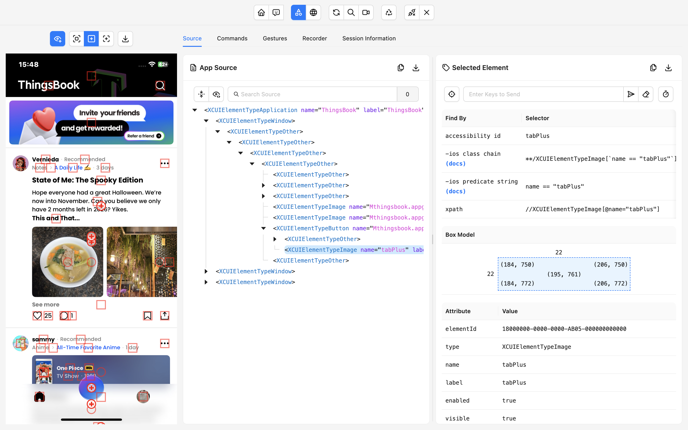
iPhone 12 실기기 UI 요소 1:1 핀 매핑 (Shawshank Redemption End)
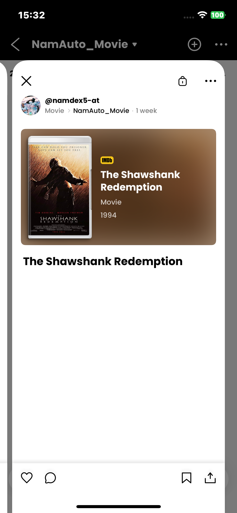
3. YAML 코딩 선언형 Maestro YAML 도입
tapOn
요소 터치 / 클릭
텍스트, ID, 실기기 좌표 기준 정밀 탭
- tapOn: "검색"
waitForAnimationToEnd
애니메이션 대기
화면 전환 및 렌더링 완료 방어 대기
timeout: 3000ms
scroll
화면 스크롤 탐색
가려진 하단 요소를 노출시킬 때까지 스크롤
direction: DOWN
swipe
제스처 스와이프
캐러셀 넘김 및 상하/좌우 제스처 이동
start: 50%,80%
assertVisible
결과 단언 검증
화면 내 필수 요소 표시 여부 최종 판정
- assertVisible: "완료"
실제 동작 화면 1:1 매핑
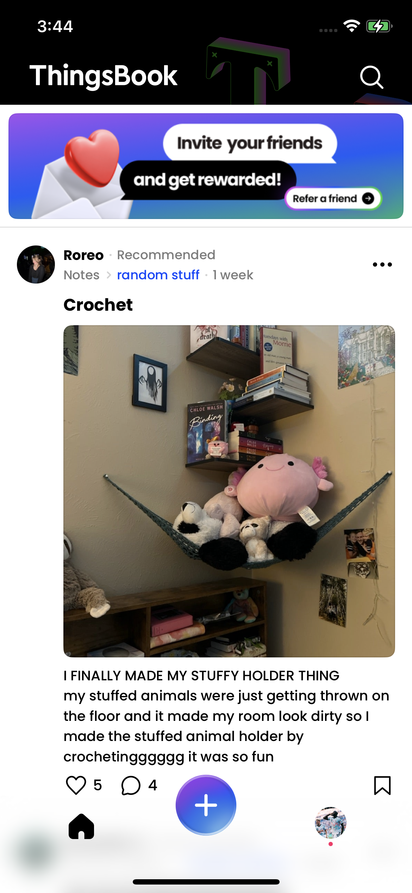
구현 대상 기획 TestRail TC (위 YAML 코드와 1:1 매핑되는 기획 TC 명세)
실제 수동 코딩으로 자동화할 TestRail TC 명세서입니다. 사전 조건 및 스텝별 사용자 액션, 기대 결과를 분석하여 상단의 선언형 YAML 스크립트로 구현합니다.
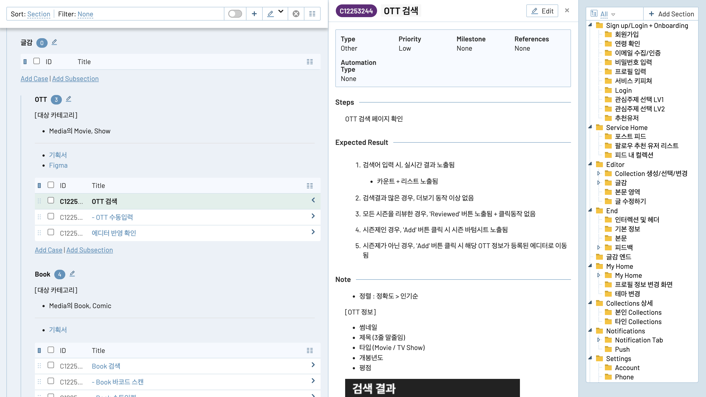
4. AITA & AI AI Test Automation
자연어로 테스트 스크립트 작성
AI Agent가 스스로 검증
AITA(AI Test Automation)는 복잡하고 파편화된 실기기 테스트 자동화를 단 하나의 파이프라인으로 통합한 플랫폼입니다. 엔지니어가 수작업으로 스크립트를 짜던 시대를 지나, QA는 테스트 시나리오만 정의하면 AI가 실기기 덤프(Ground Truth)를 기반으로 100% 실행 가능한 코드를 자동 컴파일 합니다. 사용할수록 실패 경험과 데이터가 자산으로 축적되어 스스로 똑똑해지는 전주기 자율 에이전트입니다.
AITA를 만들게 된 배경
실기기 자동화를 구축하며 겪었던 3대 병목을 근본적으로 해결하기 위해 시작되었습니다.
파편화된 도구와 끝없는 단절
기획서(TestRail), UI 인스펙터(Appium), 스크립트 작성(Java/TestNG), 실기기 실행기까지 모든 도구가 따로 놀았습니다. 도구 간의 사일로(Silo)가 생산성을 갉아먹었습니다.
AI의 상상 코딩과 유지보수 지옥
일반 LLM에게 코딩을 맡기면 없는 XPath를 만들어내는 환각이 발생했습니다. TC가 변경되면 수정하는 시간이 더 긴 상황이었습니다.
일회성 스크립트에서 '자산화'로의 전환
동일 원인으로 반복 실패. 실패 경험과 노하우가 시스템에 축적되지 못했습니다.
AITA 탑재 6대 핵심 기능
스크롤을 통해 AI 기반 자동화 구현부터 독립 런타임, 공통 YAML 자산, TestRail 실시간 연동까지 차례로 탐색합니다.
01. 플랫폼 철학 & 자율 에이전트
AITA는 자동화 구현을 사람에서 AI로 이동시키는 것을 목표
원하는 기능들을 한곳에 모아둔 강력 플랫폼
💡 이들이 단계별로 맞물려 동작하기 때문에 사람이 말하듯 쓴 자연어 TC가 오차 없는 선언형 Maestro Yaml코드로 완성될 수 있습니다.
02. TestRail TC와 자동화 스크립트 규격화
TestRail Cloud REST API를 통해 섹션 내 모든 Case Metadata를 실시간 동기화하고, 누락과 오타 없이 정밀한 Case ID 어노테이션(@TestRailCase)이 각인된 Java TestNG 규격 코드를 자동 생성합니다.
// 1. TestRail Cloud REST API v2 실시간 호출
GET /index.php?/api/v2/get_cases/12&suite_id=108
// 2. API JSON 파싱 및 Case Metadata 동기화
{
"section_id": 8,
"section_name": "Test_08_Notifications",
"cases": [
{ "id": "C12253000", "title": "앱 사용 중 푸시 알림" },
{ "id": "C12253001", "title": "푸시 알림 클릭" },
{ "id": "C12253002", "title": "- 에디터 작성 중 푸시 알림 클릭" },
{ "id": "C12253005", "title": "앱 아이콘 뱃지" }
],
"total_count": 4
}
✔ Section ID: Test_08_Notifications 매핑 완료
✔ Case ID Lock: C12253000, C12253001, C12253002, C12253005
✔ Total Synced: 4 Test Cases In Suite
➔ Target: Suite_003_Push.java
⚡ 기획서 동기화 ➔ Java TestNG 규격 파일 즉시 자동 생성
※ Case ID 어노테이션(@TestRailCase) 각인으로 수기 입력 0분 달성package Thingsbook.iOS_APP.Regression.Test_08_Notifications;
import org.testng.annotations.Test;
import Thingsbook.iOS.Execution.annotation.TestRailCase;
import Thingsbook.iOS.Common_Setup.Thingsbook_iOS_APP_Real_Regression_Setup;
public class Suite_003_Push extends Thingsbook_iOS_APP_Real_Regression_Setup {
@Test (priority = 1, description = "앱 사용 중 푸시 알림")
@TestRailCase("C12253000")
public void C12253000() {
}
@Test (priority = 2, description = "푸시 알림 클릭")
@TestRailCase("C12253001")
public void C12253001() {
}
@Test (priority = 3, description = "- 에디터 작성 중 푸시 알림 클릭")
@TestRailCase("C12253002")
public void C12253002() {
}
@Test (priority = 4, description = "앱 아이콘 뱃지")
@TestRailCase("C12253005")
public void C12253005() {
}
}03. 1:1 스켈레톤 YAML 자동 생성
generate_default_yamls.py가 생성된 Java 코드를 정규식 파싱하여 TestRail Case ID(#C12253000)와 매칭되는 기본 뼈대 YAML을 누락 없이 일괄 생성합니다. 수동 매핑 태깅 누락을 원천 차단하고 완전한 정합성을 보장합니다.
// 1:1 매핑 선언부
@TestRailCase("C12253000")
public void C12253000() { }
@TestRailCase("C12253001")
public void C12253001() { }
@TestRailCase("C12253002")
public void C12253002() { }
@TestRailCase("C12253005")
public void C12253005() { }
✔ Case ID와 YAML 섹션 간 불일치 0% 무결점 보장
✔ 수동 태깅 누락 방지 자동 스켈레톤 파이프라인#C12253000
# 수동 확인 공백 유지
# 수동 확인 공백 유지
- launchApp:
appId: com.navercorp.article.ios
#C12253001
#C12253002
#C12253005
- stopApp:
appId: "com.navercorp.article.ios"04. QA 자연어 ➔ 테스트 코드 생성
실제 앱 UI 덤프를 AI에게 사전 주입(Capture)하고 비즈니스 동의어 사전(Semantic)과 의도 해석(Intent), 10대 방어 룰(Defense)을 통해 실기기에서 100% 작동하는 코드로 컴파일합니다.
0. 로그인 상태로 앱 진입
1. GNB "+" Create 버튼 선택
2. 컬렉션 리스트에서 "NamAuto_Movie" 선택
3. 글쓰기 에디터 글감 추가 [+] 버튼 클릭
4. OTT 글감 검색 화면 진입 및 "The Shawshank Redemption" 검색
5. Reviewed 버튼 위의 The Shawshank Redemption 영화 정보 선택하여 에디터에 추가
6. 에디터 진입 및 글감 추가 성공 확인#C12253244
# [OTT 글감 검색 확인]
# 0. 로그인 상태로 앱 진입
- launchApp:
appId: com.navercorp.article.ios
- extendedWaitUntil:
visible: "tabPlus"
timeout: 10000
# 1. GNB "+" Create 버튼 선택
- tapOn: "tabPlus"
- waitForAnimationToEnd:
timeout: 3000
# 2. 컬렉션 리스트에서 "NamAuto_Movie" 선택 (하단 탭바 겹침 방지 스와이프)
- scrollUntilVisible:
element:
text: "NamAuto_Movie"
direction: DOWN
timeout: 15000
- extendedWaitUntil:
visible: "NamAuto_Movie"
timeout: 5000
- tapOn: "NamAuto_Movie"
- extendedWaitUntil:
visible: "iconCollectionFold"
timeout: 15000
# 3. 글쓰기 에디터 글감 추가 [+] 버튼 클릭
- tapOn: "plus"
- waitForAnimationToEnd:
timeout: 3000
# 4. OTT 글감 검색 화면 진입 및 "The Shawshank Redemption" 검색
- extendedWaitUntil:
visible: "Search movie or TV show"
timeout: 15000
- inputText: "The Shawshank Redemption"
- extendedWaitUntil:
visible: ".*(Reviewed|1994).*"
timeout: 15000
# 5. Reviewed 버튼 위의 The Shawshank Redemption 영화 정보 선택하여 에디터에 추가
# (상단 검색창 탭 방지: 영화 정보 타이틀 영역 좌표 탭)
- tapOn:
point: "50%, 24%"
- waitForAnimationToEnd:
timeout: 3000
# 6. 에디터 진입 및 글감 추가 성공 확인
- extendedWaitUntil:
visible: "iconCollectionFold"
timeout: 15000
- assertVisible: "The Shawshank Redemption"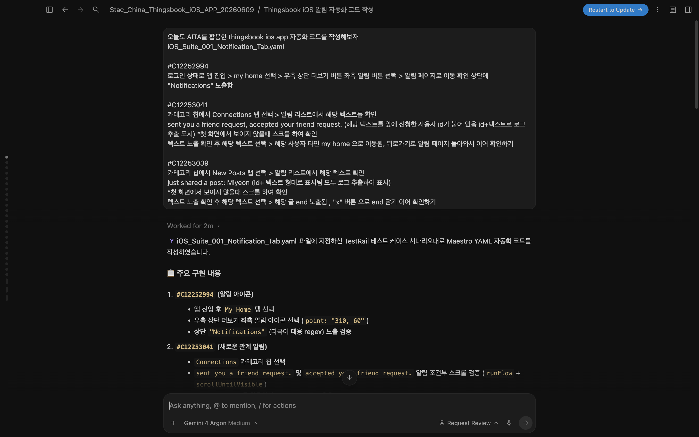
05. 실기기 실행 검증 & Self-Correction
경량 실행 엔진 maestro-runner가 iPhone 실기기에서 코드를 돌리다 지연이나 팝업으로 실패하면, AI가 실패 로그를 실시간 분석해 대기 시간과 방어 로직을 보정하여 자가 치유(Self-Correction)합니다.
동적 네트워크 지연 또는 UI 렌더링 딜레이로 타임아웃 감지
Exit Code: 1 (FAIL)실패 로그 및 스택 트레이스 파싱 후 최적 대기/좌표 룰 자동 보정
Self-Correction Triggered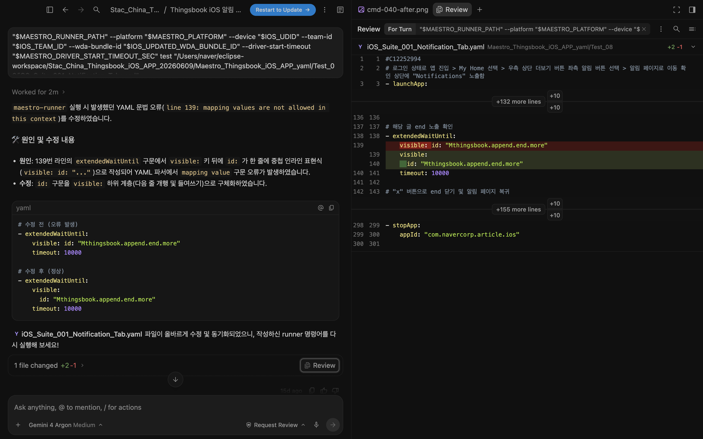
06. 유지보수 관련 기능 탑재
sync_testrail_yaml.py가 기획 TC가 수정되더라도 엔지니어가 공들여 튜닝한 기존 YAML의 핵심 동작 코드를 100% 보존하면서 변경된 단계만 지능적으로 병합(Diff Merge)합니다.
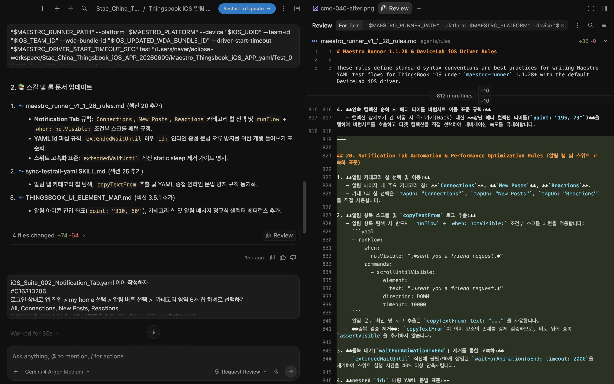
5. 배치 실행 사전 검증 & 4단계 엔드투엔드 파이프라인
AITA 생성 YAML의 실기기 PASS 검증부터 Dev_Regression 샌드박스 승격, Java TestNG 기반 Real_Regression 융합, 그리고 TestRail 양방향 자동화까지
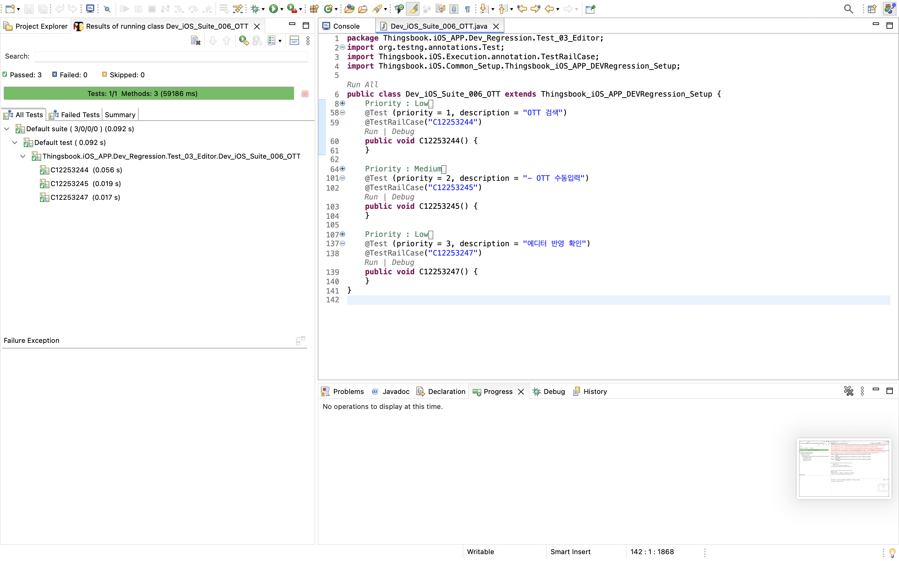
01. YAML 단건 실기기 정상 실행 검증 (OTT Suite 006)
AITA로 생성한 YAML 테스트 코드가 실제 실기기에서 정상으로 PASS까지 도달하는지 즉각 확인
AITA 에이전트가 완성한 선언형 YAML 스크립트가 실제 iPhone 환경에서 예외나 타임아웃 없이 100% 정상 PASS 동작을 완료하는지 단건 실행으로 확인합니다. 요소 탐색 속성, 스크롤 보정, 애니메이션 대기 등 실기기 방어 룰이 안정적으로 적용되었는지 운영 승격 전 단건으로 즉각 피드백을 확보합니다.
6. 실행 결과 67개 스위트 230건 테스트 자동 수행 & 결과 업데이트
테스트 자동화 스크립트가 67개 스위트 230건의 회귀 시나리오를 사람의 개입 없이 자동으로 충실하게 수행하고, TestRail에 실시간으로 결과를 완주 기록한 실제 실행 데이터입니다.
7. 도입 전후 비교 수동 QA의 피로를 혁신으로
자동화 테스트 도입 성과
ThingsBook iOS 자동화 리그레션 구축으로 완성한 6대 핵심 비교 분석.
방식을 선택하세요.
전체 284개 TC 일일이 수기 클릭
최소 8시간 이상 전일 수기 검증
단순 반복 테스트로 테스터 에너지 소진
테스터의 피로도와 주관에 따라 검증 편차 발생
AI 없이 수작업 코딩 시 45일(360h) 소요
TestRail 284개 결과 수기 입력
8. 총결 AI는 도구일 뿐 핵심은 엔지니어의 도전과 집념입니다
"직접 시도해 보고
원리를 기억해두기"
수동 코딩부터 실기기 동작 메커니즘까지 기본 원리를 직접 겪어보고 머릿속에 기억해 두는 것이 무엇보다 중요합니다.
기본 원리를 명확히 알고 있어야 AI의 도움을 받더라도 돌발 상황이나 오류에 직면했을 때 흔들리지 않고 주도적으로 문제를 해결할 수 있습니다.
"AI가 있다고 해서
모든 것이 다 해결되는 것은 아닙니다."
AI가 생성한 코드는 결국 AI가 작성한 것이기에, 복잡한 실기기 구동 환경에서 어떤 예외와 돌발 오류에 닥칠지 모릅니다.
AI를 맹신하지 않고 꼼꼼한 사전 테스트를 거치며, 실제 런타임 변수를 꾸준히 보완하고 방어 규칙을 다듬어야 비로소 신뢰할 수 있는 자동화가 완성됩니다.
"AI를 어떻게 활용하는가에 따라
그 결과는 천차만별입니다."
AI를 단순 일회성 질문 도구로 끝낼 것인지, 업무 전체를 관통하는 시스템으로 발전시킬지는 엔지니어의 창의적 아이디어에 달려 있습니다.
창의적 시각으로 AI 활용을 극대화하면 AITA와 같은 전주기 자율 파이프라인을 직접 구축할 수 있으며, 나아가 그보다 훨씬 더 뛰어난 플랫폼도 얼마든지 만들어낼 수 있습니다.